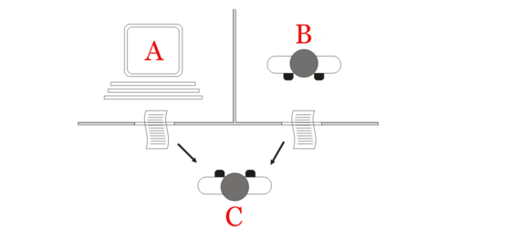
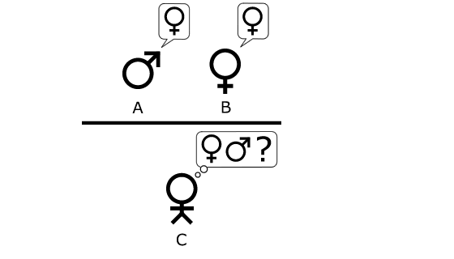
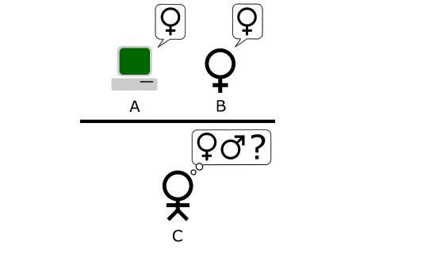
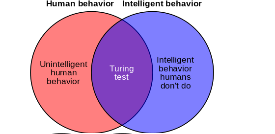

The Turing test, developed by Alan Turing in 1950, is a test of a machine's ability to exhibit intelligent behavior equivalent to, or indistinguishable from, that of a human. Turing proposed that a human evaluator would judge natural language conversations between a human and a machine designed to generate human-like responses. The evaluator would be aware that one of the two partners in conversation is a machine, and all participants would be separated from one another. The conversation would be limited to a text-only channel such as a computer keyboard and screen so the result would not depend on the machine's ability to render words as speech.[2] If the evaluator cannot reliably tell the machine from the human, the machine is said to have passed the test. The test does not check the ability to give correct answers to questions, only how closely answers resemble those a human would give.
The "standard interpretation" of the Turing Test, in which player C, the interrogator, is given the task of trying to determine which player – A or B – is a computer and which is a human. The interrogator is limited to using the responses to written questions to make the determination.
The Imitation Game, as described by Alan Turing in "Computing Machinery and Intelligence." Player C, through a series of written questions, attempts to determine which of the other two players is a man, and which of the two is the woman. Player A, the man, tries to trick player C into making the wrong decision, while player B tries to help player C. Figure adapted from Saygin, 2000
The Original Imitation Game Test, in which the player A is replaced with a computer. The computer is now charged with the role of the man, while player B continues to attempt to assist the interrogator. Figure adapted from Saygin, 2000.
